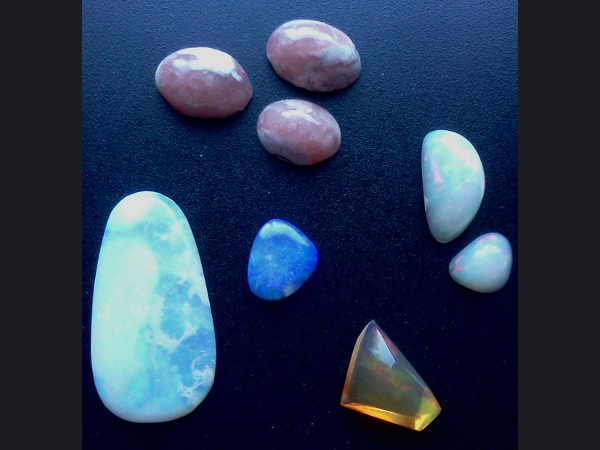
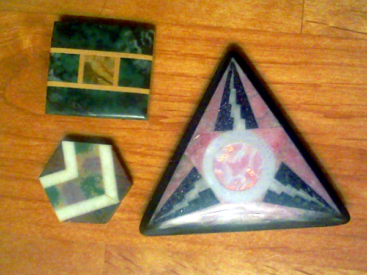

This was my first forged knife, made from a piece of rebar. It earned me
an apprenticeship.


These stones are all prettier than they appear in the pictures. It might be a good
summer project for me to learn more about photographing small shiny things and get
the right kind of lighting so I can do a better job with it. I went through about
two hundred really bad pictures, just to have a few for this page's content.
The agatized jasper here looks like painted porcelain with an almost liquid gloss
in real life, but I don't think I captured any of that in this picture.
My favorites here are the four matched jasper stones at the top. They've got a nice
flow visually and some funky colors, and they're cut slightly assymetrical to go with
the organic look of the settings they're going into.


Opals are one of the stones I most enjoy working with. The pink stones are rhodochrosite
and there's a better shot of the agatized jasper and a not-so-good shot of a rainbow
obsidian at the bottom right, but the rest are all different kinds of opal. Even the
intarsia butterfly wings have a paper-thin layer of opal sandwiched between the quartz
glass cap and the colored stone underneath, and depending on the light and angle, it
ranges from invisible to adding bright flashes of color. The wings are where I tried to
put the image map link, but it shifted a bit to the right for some reason.


I've only done a few faceted stones because I don't have all the equipment to do them
properly.
I do have enough to do intarsia though, and I enjoy the challenges of matching
pieces of stone and planning all of the cuts needed for a particular effect.


This door-knocker was a fun project, and I have some matching door handles
I'm getting ready to cast. The three alloys used were all ones I developed
myself.
The thing that looks like a Rorschach test is just a free-pour of an alloy
I was working on and saved because it looked interesting. I ended up using
that same alloy recipe for the tongue-ring of the door knocker, because it had a
high melt-point which was needed to be able to cast the tongue around it.

The jewelry I make can be as inexpensive as this fold-formed
copper, or as extravagant as this 14k gold opal ring. Since
most of what I make ends up as random gifts to acquaintances,
I usually start with inexpensive materials and try to make
them interesting.

I usually do smithing or casting, but I've also been learning to
work with wire.